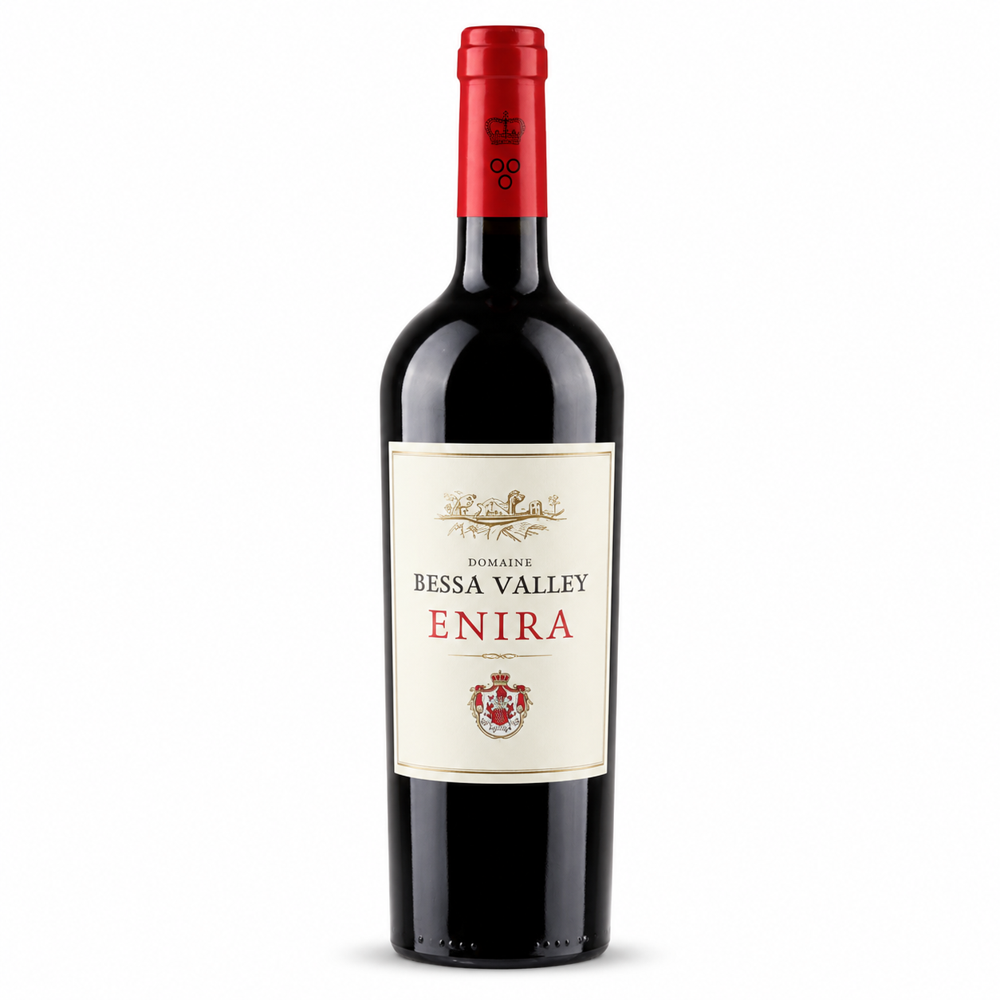
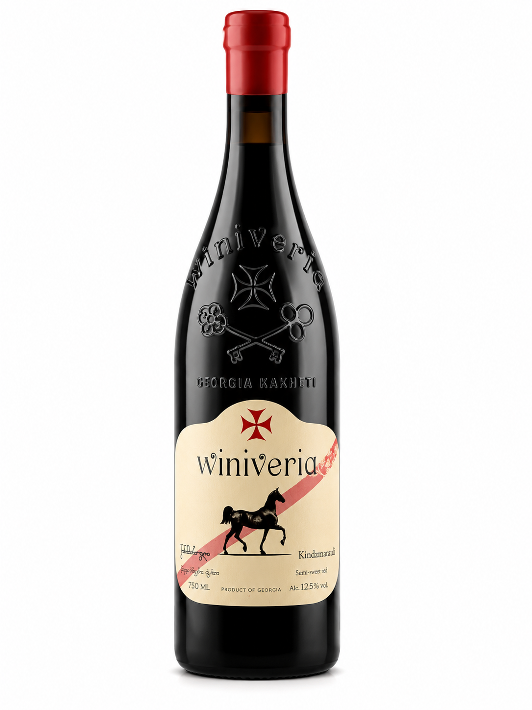

Red wines
```A small red wine selection chosen for warmth, depth and character. These are bottles for food, music and evenings that should feel a little slower.

La Bollina Tavros Primitivo di Manduria 2023
A rich Italian red wine made from 100% Primitivo. It feels warm, bold and full-bodied, with ripe fruit, dark chocolate, espresso, cinnamon, vanilla and subtle notes of tobacco, cedarwood and leather.
According to the seller, this wine can be enjoyed now or cellared for up to 8 years. It is recommended to decant it before drinking, so it can open up properly.
My opinion: This is probably my personal favorite in this selection. I like wines that feel warm, dark and smooth, and this Primitivo sounds exactly like that. It is not a shy wine — it has weight, richness and a slightly sweet, intense character.
Pairs well with: beef, lamb, pasta dishes, rich sauces or dark chocolate.
View wine at 8wines
Lapostolle Apalta 2022
A Chilean red wine from Apalta, made as a Bordeaux-style blend. It combines Cabernet Sauvignon, Carmenère, Syrah and Merlot, giving it a rich, structured and elegant character.
The blend is made from 60% Cabernet Sauvignon, 32% Carmenère, 5% Syrah and 3% Merlot. With 14.5% alcohol, it feels powerful, deep and full-bodied, but still refined.
My opinion: This wine feels more serious and elegant than a simple everyday red wine. I like that it has both strength and structure. It sounds like a bottle for a proper dinner, a calm evening or a moment where you want something a little more special.
Pairs well with: steak, lamb, roasted vegetables, rich sauces or hard cheese.
View wine at 8wines
Bessa Valley Enira 2019
A Bulgarian red wine from the Bessa Valley winery, located between the Rhodope Mountains and the Maritsa River. It is made in a Bordeaux-inspired style with Merlot, Syrah, Petit Verdot and Cabernet Sauvignon.
The wine spends one year ageing in French oak barrels, which gives it more polish, depth and complexity. It can be enjoyed now or cellared for up to 8 years. According to the seller, there is no need to decant it before serving.
It shows dark berries, plums and mulberries, with deeper notes of cinnamon, clove and vanilla. On the palate, it feels full-bodied, smooth and rich, with firm tannins and a long finish with sweet spice and light woodsmoke.
My opinion: I like this wine because it feels serious, but still easy to enjoy. It has the dark fruit and smooth character I like in red wine, but also a more classic Bordeaux-style structure.
Pairs well with: charcuterie, mature hard cheese, grilled meat, rich pasta dishes or roasted vegetables.
View wine at 8wines
Winiveria Kindzmarauli 2024
A semi-sweet Georgian red wine made from traditional Saperavi grapes. It comes from the Kakheti region, one of Georgia’s most important wine areas, and shows a very different side of red wine.
The wine is produced in the Kindzmarauli microzone near Kvareli. It matures for two years in traditional Qvevri terracotta pots, giving it a strong connection to Georgian wine culture.
It has a dark garnet colour, with aromas of red fruits, cherries and delicate violet notes. On the palate, it feels sweet, smooth and elegant, with velvety tannins and a long finish with hints of wild berries.
My opinion: I like this wine because it brings something different into the red wine selection. It is softer, sweeter and more cultural than the other bottles. For me, it sounds like a wine for dessert, quiet evenings or for someone who wants to try something special from Georgia.
Pairs well with: red fruits, nuts, caramel desserts, chocolate desserts or a calm evening on its own.
View wine at 8winesSome links on this page are affiliate links. If you buy through them, I may earn a small commission at no extra cost to you.